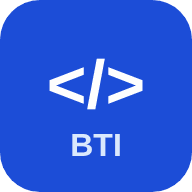

Juego 1: Quiz tecnológico
10 preguntas de opción múltiple sobre hardware, software, almacenamiento, sistemas operativos, IA y seguridad digital.

Poné a prueba lo que aprendiste con dos desafíos: un quiz de 10 preguntas y un juego para reconocer componentes en imágenes.
Son dos juegos cortos, de 10 desafíos cada uno. Cada respuesta tiene su explicación y al final recibís una nota de 0 a 10. No hace falta escribir tu nombre ni ningún dato personal.
10 preguntas de opción múltiple sobre hardware, software, almacenamiento, sistemas operativos, IA y seguridad digital.
Mirá una imagen, elegí la respuesta y confirmala. Sirve para reconocer piezas y entender para qué se usan.
Respondé 10 preguntas y conseguí tu nota final de 0 a 10. Las preguntas cambian de orden en cada partida.
Cuando estés listo, tocá el botón. Tenés una sola respuesta por pregunta y después ves la explicación.
Mirá la imagen, elegí una respuesta y confirmala. Son 10 desafíos, cada uno con su explicación, y al final recibís una nota de 0 a 10.
Cuando estés listo, tocá el botón. Los desafíos cambian de orden en cada partida.

Elegí una respuesta y después tocá «Confirmar respuesta».